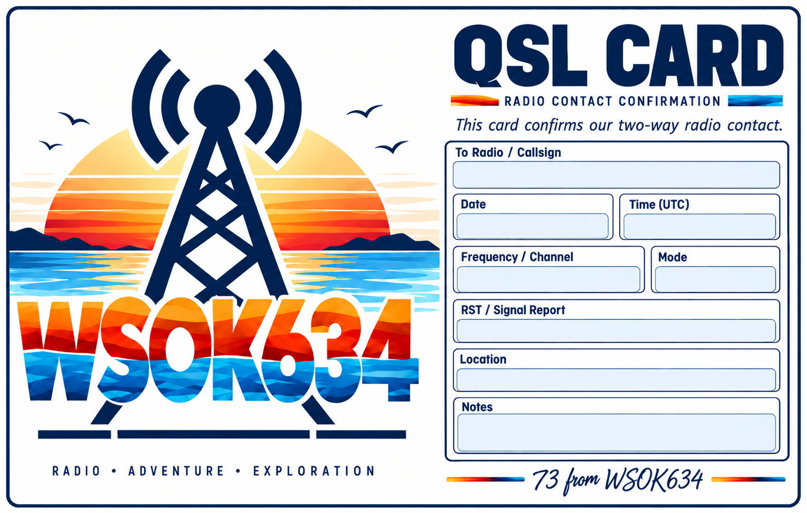

Personal GMRS station
GMRS • NORTH TEXAS
Radio.
Adventure.
Exploration.
Welcome to WSOK634.net — my corner of the airwaves for GMRS, radio projects, road trips, and the places a good signal can take you.
Local and travel operation
Simplex • Repeaters • Mobile
Radio contacts & adventures
ABOUT THE STATION
More than a call sign.
WSOK634 is a personal GMRS station built around practical communications, experimentation, and getting outside. The goal is simple: make useful contacts, learn something new, and have fun doing it.
This site is a home for station information, QSL details, radio projects, and notes from trips where the radios come along for the ride.
THE RADIO SIDE
Built for the road and the airwaves.
From handhelds to mobile installs and repeaters, the fun is in making the whole system work well together.
Mobile
Vehicle-based GMRS for local communication, road trips, and exploring beyond familiar coverage.
Repeaters
Using and learning regional repeater systems while keeping a strong focus on good operating practice.
Projects
Antennas, programming, radio interfaces, code plugs, and the occasional experiment that starts with “what if?”
QSL / CONTACT CONFIRMATION
Use the card we designed.
If we made contact on GMRS, a QSL card is always welcome. Include your call sign, date, approximate time, channel or repeater, location, and signal report.
Call SignDate / TimeChannelLocationSignal Report
This section now uses your actual custom QSL card design instead of a generic placeholder. Mailing details can be exchanged privately.

73 FROM WSOK634
See you on the air.
WSOK634.net is a personal, non-commercial GMRS site. Check back for station updates, radio projects, QSL information, and trip notes.